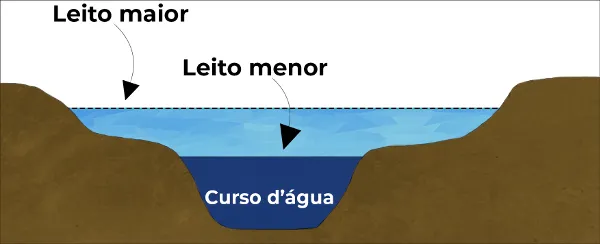

Rafael
O Rio Grande do Sul foi atingido por fortes chuvas provocadas pela passagem de um ciclone extratropical, que causou enchentes, destelhamento de casas, queda de árvores e quebra de pontes. O desastre natural deixou, até o momento, 50 mortes e 8 pessoas desaparecidas.
Cerca de 10 mil edificações foram atingidas pelas enchentes, sendo que 67% delas ficaram "gravemente submersas". A operação de resgate dos atingidos e busca por desaparecidos continua.
Pitter
Em geral, os rios perenes–isto é, aqueles que nunca secam durante o ano-costumam ter dois tipos de leito: um menor e principal, por onde a água corre durante a maior parte do tempo, e um maior e complementar, que é inundado apenas em períodos de cheias.
Essa manifestação é mais comum em áreas planas, também chamadas de planícies de inundação.
Bruno

Na representação acima, temos um corte transversal do curso de um rio em que estão representados os seus leitos maior e menor. Eventualmente, dependendo do curso d'água e das condições meteorológicas e locais, o leito maior é inundado, provocando as cheias em sua área.
O período em que isso ocorre varia de rio para rio e, quando não é muito comum, o leito do rio pode ocupar algumas casas, vilas e até cidades, que são surpreendidas pelas cheias naturais eventuais. Em alguns casos, cidades inteiras ficam embaixo d´água.
Luis Pedro
A interferência humana sobre os cursos d'água, provocando enchentes e inundações, ocorre das mais diversas formas. Em casos extremos, porém menos comuns, tais situações podem estar relacionadas com rompimentos de diques e barragens, o que pode causar sérios danos à sociedade.
Mas, quase sempre, essa questão está ligada ao mau uso do espaço urbano.
Régis
Um problema que parece não ter uma solução rápida é o elevado índice de poluição, causado tanto pela ausência de consciência por parte da população quanto por sistemas ineficientes de coleta de lixo ou de distribuição de lixeiras pela cidade. Além do mais, há problemas causados pela poluição gerada por empresas e outros órgãos.
Com isso, ocorre o entupimento dos bueiros, que seriam responsáveis por conter parte da água que eleva o nível dos rios. Além disso, o lixo gerado é levado pelas enxurradas e contribui ainda mais para elevar o volume das águas. A ocorrência de enchentes nas cidades também pode estar relacionada com problemas nos sistemas de drenagem.
Às vezes, não há bueiros ou outras construções que seriam responsáveis pela contenção ou desvio da água que corre para os rios, provocando a cheia deles. Além disso, somente a construção de bueiros e sistemas de drenagem pode não ser suficiente, isso porque as demais ações antrópicas podem elevar gradualmente a vazão das enxurradas ao longo dos anos,
fazendo com que as drenagens existentes não consigam atender toda a demanda.
Isa
Outra questão é a ocupação irregular ou desordenada do espaço geográfico. Como explicamos, algumas áreas correspondem ao leito maior de um rio que, esporadicamente, inunda. Com a ocupação irregular dessas áreas – muitas vezes causada pela ausência de planejamento adequado –, as pessoas estão sujeitas à ocorrência de inundações. Além disso,
a remoção da vegetação que compõe o entorno do rio pode intensificar o processo, pois ela teria a função de reter parte dos sedimentos que vão para o leito e aumentam o nível das águas.
Rafael
Apesar de todos os problemas antes mencionados, a causa considerada principal para as enchentes é, sem dúvida, a impermeabilização do solo. Com a pavimentação das ruas e a cimentação de quintais e calçadas, a maior parte da água, que deveria infiltrar no solo,
escorre na superfície, provocando o aumento das enxurradas e a elevação dos rios. Além disso, a impermeabilização contribui para a elevação da velocidade desse escoamento, provocando erosões e causando outros tipos de desastres ambientais urbanos.
Pitter
Existem inúmeras medidas de combate às enchentes. A cidade de Belo Horizonte, por exemplo, contratou, em outubro de 2013, alguns “olheiros”, que são funcionários encarregados de detectar o início de inundações em áreas de risco. Eles teriam a função de minimizar os efeitos da “inundação relâmpago”,
aquela que ocorre em um curtíssimo período de tempo. Outras ações envolvem a construção de barragens e o desassoreamento do leito dos rios, em que todos os sedimentos existentes no fundo dos cursos d'água são removidos, aumentando a sua profundidade.
Bruno
Mas todas essas medidas são paliativas, ou seja, são apenas para minimizar ou combater uma situação já existente. A melhor forma de lidar com esse problema, na verdade, é realizar uma devida prevenção, que pode ocorrer por meio de medidas como estas:
1º.Construção de sistemas eficientes de drenagem;
2º.Desocupação de áreas de risco;
3º.Criação de reservas florestais nas margens dos rios;
4º.Diminuição dos índices de poluição e geração de lixo;
5º.Planejamento urbano mais consistente.
Regis
Umas das coisas que o Rio Grande do sul pode fazer é um Canal Subterrâneo de Escoamento como à de tóquioque tem um sistema de 6,3 quilômetros de túneis e câmaras cilíndricas que ajudam o norte da cidade não alagar,
o custo disso seria alto e demoraria, mas poderia previnir e muito as altas
Luis Pedro
O problema das enchentes é crônico em muitas cidades brasileiras, com destaque para Porto alegre. A capital gaucha costuma sempre aparecer com ocorrências desse tipo em períodos de chuva,
além de outras cidades que também padecem da mesma situação. As inundações, além de danos materiais, podem provocar doenças, como a leptospirose. Portanto, trata-se também de uma questão de saúde pública.